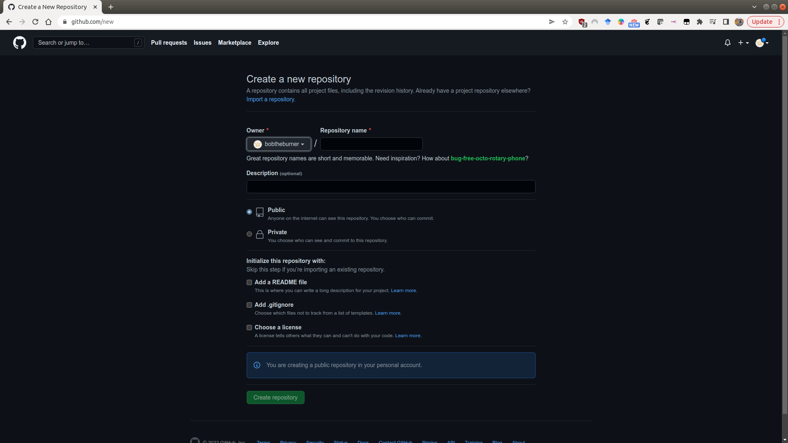

creating a new github repository
The easiest way to create a new GitHub repository is to point your browser to https://github.com/new. You’ll need to be logged in to do this, but you should see the following screen:
{kind=link}
Here, you can fill out the basic information about the repository: the name, a short description, and choose whether it should be Public or Private.
Note
If you make the repository Private, it will be more difficult to share it with others, such as the person marking it.
You will also see that you have the option to initialize some of the required files in the repository - namely, the README, .gitignore, and LICENSE files. I discuss these in a bit more detail below, but it is usually easier to add these now at the start, rather than forgetting later on.
Once you’ve filled out the basic information:

click on Create repository, and your new repository will appear:

README.md
The README file is what shows on the front page of your GitHub repository - it provides a (brief) introduction to the repository - what it is, how to get started with it, and so on.
GitHub initializes this as a Markdown file (.md). When you add text to the README file, you can add formatting such as bold, or italic font, hyperlinks, and even lists and tables.
For more information about how to format the README using markdown, check out this helpful cheat sheet (or just search ‘markdown cheat sheet’ on your search engine of choice).
.gitignore
Remember that this file is used to tell git what files to ignore. The easiest way to create this is to either use the suggested template for Python when initializing the repository, or to visit a site like https://gitignore.io, which helps you add software-specific files to ignore (for example, those created by IDEs like PyCharm or VS Code).
For more information about how to add files or folders to the .gitignore file, see this helpful guide.
license
When you initialize the repository, you should also remember to include a LICENSE file. GitHub provides a number of templates for this, which differ depending on the terms of the license.
In general, safe bets for a new project are going to be options like the MIT License or the GPL v3.0. GitHub also provides a helpful website, https://choosealicense.com/, to help you choose a license for your repository based on your needs.
cloning the repository
Once you’ve set up the repository on GitHub, you can clone it to your computer:
git clone https://github.com/<your_username>/<your_project>.git
From there, you can start working on your scripts, add to the README file, and so on.
working on the repository
As you edit files, remember that you will need to commit (save) the changes, as well as push (upload) them to your GitHub repository.
You can do this either via the git command line interface, or using GitHub Desktop (if you have it installed).